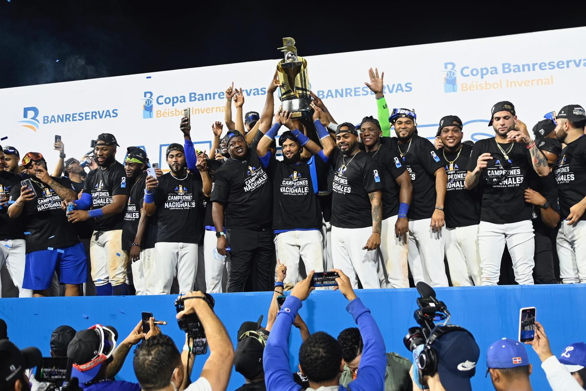

El Equipo Más Ganador
Los Tigres del Licey son un equipo de béisbol profesional de la República Dominicana, fundado en 1907 en la ciudad de Santo Domingo. Son el equipo con más títulos en la Liga de Béisbol Profesional de la República Dominicana (LIDOM).
Con sus icónicos colores azul y blanco, los Tigres han forjado una identidad inigualable en el deporte nacional. Su estadio, el Estadio Quisqueya Juan Marichal, es la casa de la fanaticada más apasionada del Caribe.
A lo largo de más de un siglo de historia, el Licey ha producido decenas de grandes ligas y continúa siendo un semillero de talento beisbolístico para el mundo.
Leer más
Principales Campeonatos
- Campeón LIDOM Temporada 2024-2025
- Serie del Caribe 2010 Cancún, México
- Campeón LIDOM Temporada 2009-2010
- Serie del Caribe 2000 Santo Domingo
- Campeón LIDOM Temporada 1999-2000
- Serie del Caribe 1994 Puerto Rico
- Primer campeonato LIDOM 1951
Valores del Club
- Pasión por el béisbol dominicano
- Compromiso con la excelencia deportiva
- Respeto a los fanáticos y la comunidad
- Desarrollo de jóvenes talentos
- Orgullo de la identidad nacional
- Trabajo en equipo y solidaridad
- Transparencia y profesionalismo
Jugadores Inmortales
Pedro Martínez

Pitcher derecho. Miembro del Salón de la Fama de MLB.
PitcherManny Ramírez

Jardinero derecho. Dos veces campeón de la Serie Mundial.
JardineroJuan Marichal

El Dandy Dominicano. Leyenda del béisbol latinoamericano.
PitcherCésar Gerónimo

Jardinero central con trayectoria en MLB y béisbol caribeño.
JardineroMomentos Históricos